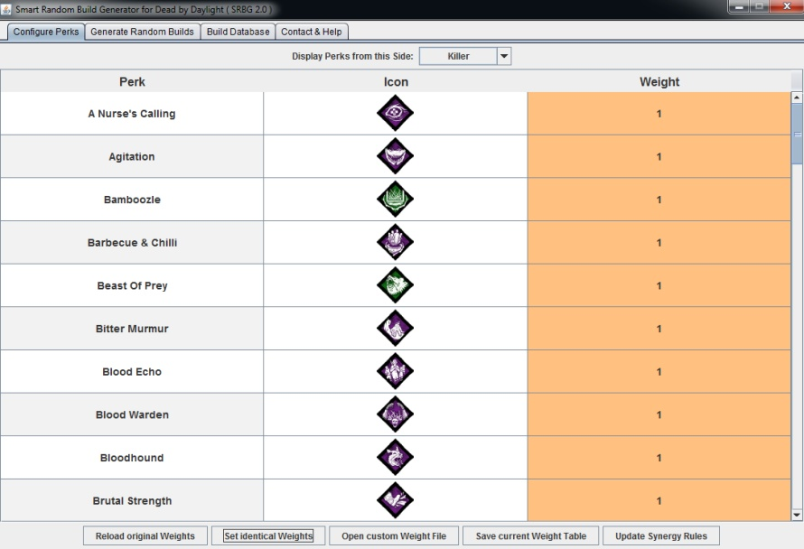
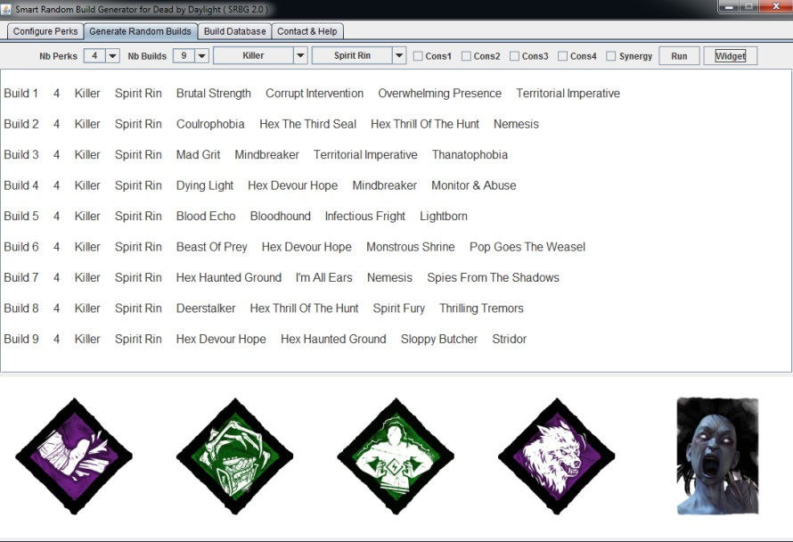

Tutorial
Welcome to 'Smart Random Build Generator' (SRBG) tutorial :)
This is a simple demonstration of the main features
Tab 'Generate Random Builds' (main tab)
Use this tab to set parameters and to generate random builds
Click 'Generate Builds' button to generate random builds

Perks and character from best random build (highest score) are graphically displayed in the interface
Meta builds or builds with combos perks (favorable synergy) are associated with high scores: they tend to be returned when the number of desired builds is larger than 1!
The best build can be automatically saved in a 'build database' (see 'Database of Builds' tab)
Parameters
- Set the number of perks in each build
- Set the number of random builds to generate
- Set the side of character ('random', 'survivor', 'killer' ; 'random' is the default value)
- Enable/disable constraints for classes of perks (several constraints are enabled by default)
- Enable/disable synergy rules about characters and perks (enabled by default)
The goal of 'perk constraints' and 'synergy rules' is to generate even better random builds
It is however possible to generate pure random builds by disabling all these previous features (see 'Configure Perks' tab)
Perk Constraints
Enabled constraint: at least 1 perk from related class of perk is required in the generated build
- Survivor constraints 1 (Cons1 - SURV_1_CARE): perks related to healing (self-care, healing efficiency, reading partner auras)
- Survivor constraints 2 (Cons2 - SURV_2_SURVIVAL): perks to increase survival (anti-tunnel, anti-hook, anti-slug, avoid detection)
- Survivor constraints 3 (Cons3 - SURV_3_CHASE): perks to help during chases (exhaustion perks, quick vaults, pallet/window detection)
- Survivor constraints 4 (Cons4 - SURV_4_DETECT): perks to reveal auras (killer or environment)
- Killer constraints 1 (Cons1 - KILLER_1_SLOWDOWN): perks to slow-down the game (generators or healing)
- Killer constraints 2 (Cons2 - KILLER_2_CHASE): perks to help during chases (pallets, windows, higher speed, lower terror radius)
- Killer constraints 3 (Cons3 - KILLER_3_DETECT): perks to detect survivors
- Killer constraints 4 (Cons4 - KILLER_4_ENDGAME): perks to have some advantage during late game
Synergy Rules
Enable synergy rules during the creation of a build
There are perk-based and killer-based synergies (both favorable and unfavorable rules are available)
Examples of perk-based synergies:
- Favorable synergy on survivor side: draw 'ace in the hole' perk will increase the probability to select 'plunderer's instinct' for the next build slots
- Unfavorable synergy on survivor side: draw 'sprint burst' perk will nullify the probability to select 'dead hard' for the next build slots
- Favorable synergy on killer side: draw 'enduring' perk will increase the probability to select 'spirit fury' for the next build slots
- Unfavorable synergy on killer side: draw 'monitor & abuse' perk will nullify the probability to select 'distressing' for the next build slots
Examples of killer-based synergies:
- Favorable synergy with 'spirit' killer: the probability to select 'stridor' perk for the next build slots is increased
- Favorable synergy with 'myers' killer: the probability to select 'monitor & abuse' perk for the next build slots is increased
- Unfavorable synergy with 'nurse' killer: the probability to select 'brutal strength' perk for the next build slots is decreased
- Unfavorable synergy with 'hillbilly' killer: the probability to select 'make your choice' perk for the next build slots is decreased
Tab 'Configure Perks'
Use this tab to configure the weight of each perk (default weights are loaded at start)
The weight simply modulate the probability for a perk to be drawn during the process
High weight means that related perk will have high probability to be selected
Identical weights involve the same probability to be selected for all perks
A weight value of 0 will disable the perk

Modify weights using various ways:
- use default weights that are loaded at start
- click 'reload original weights' button to reload predefined weights for each perk
- click 'set identical weights' button to set the same weight for each perk
- click 'open custom weight file' button to load custom weights for each perk
- manual edit of weights directly from table
Current weights can be automatically loaded at start if the configuration file 'perk_db_custom.txt' is found in the working directory
The 'perk_db_custom.txt' file can be created using the 'save current weight table' button
Generate pure random Builds
All features ('perk weights', 'perk constraints' and 'synergy rules') were disabled using the 'set identical weights' button

The generated builds are now purely random and less interesting:

Previous generated builds with all features ON:
Tab 'Database of Builds'
Use this tab to:
- Store custom builds in the database
- Manipulate (add/remove) builds in the database
More than 4000 predefined builds are automatically loaded at start

Features
- Button 'reload db': reload original build database
- Button 'update db (github)': merge current build database with last remote version from GitHub
- Button 'open custom db': open custom build database
- Button 'save current db': save current build database
- Button 'add random build': add previously generated random build from 'Generate Random Builds' tab to the database
- Button 'add current build': add current designed build to database (side/character and 4 distinct perks were previously selected)
- Button 'delete builds': delete selected builds from database
- Filter Rows: search/filter database using text-based patterns (case insensitive search, regular expressions can be used)
- Button 'random select': randomly select one saved build from database

You can use this function to randomly select a build within a shortlist (at least 2 selected rows)
In this example, only spirit builds were kept using the filter features. They were then selected using either mouse or keyboard (Ctrl+A)
Click the 'random select' button will randomly chose one build from the subset
Current build database can be automatically loaded at start if the configuration file 'build_db_custom.txt' is found in the working directory
The 'build_db_custom.txt' file can be created using the 'save current db' button
Acknowledgements
Perk pictures were adapted from http://deadbydaylight.gamepedia.com